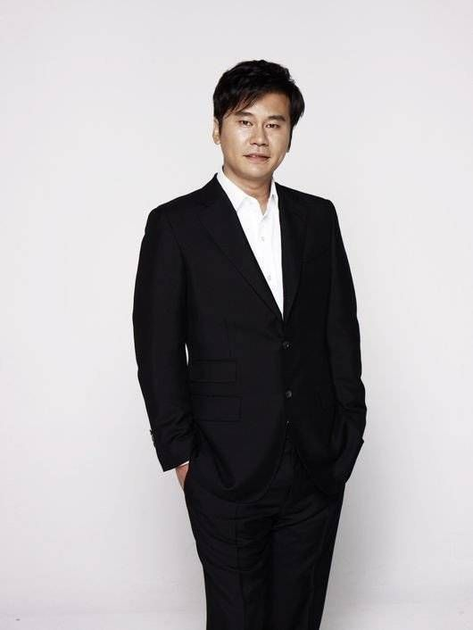

YG ENTERTAINMENT
Berawal dari menaungi grup hip-hop 1TYM
kini YG Entertainment merupakan rumah bagi sejumlah penyanyi K-pop ternama yang telah berhasil
menarik perhatian internasional, seperti
BIGBANG
AKMU
WINNER
iKON
BLACKPINK
SECHKIES
Jinusean
TREASURE
Serta aktor dan aktris seperti Kang Dong-won, Choi Ji-woo, dan Cha Seung-won.
Dalam hal kontribusi penghasilan perusahaan, Big Bang adalah penyumbang pendapatan
terbesar dengan penjualan album Made sebanyak 4,2
juta kopi di Tiongkok dan lebih dari 13,3 juta kopi di seluruh Asia. Seluruh konten
resmi yang dirilis oleh YG dan artisnya telah disaksikan lebih
dari 7 miliar tampilan di YouTube.